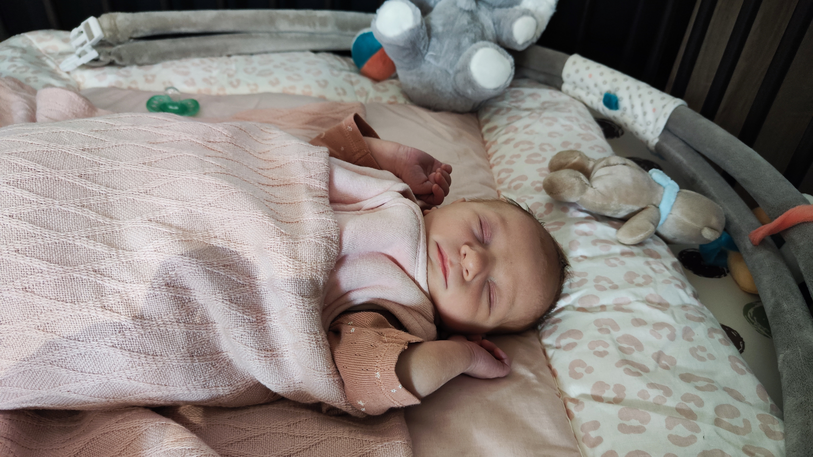

Baptême

Mayline
Invitations
Oyé oyé, famille, amis et amateurs de dragées !
Notre petite Mayline a décidé de prendre un bain sacré (oui, avec de l’eau bénite cette fois).
Et comme elle ne peut pas encore parler pour vous inviter… on s’en charge !
📅 Rendez-vous le 21 septembre à 12H45, à l'église de salernes
🕊️ Pour le baptême, pas de combinaison de plongée requise, juste votre plus beau sourire.
Après avoir fait trempette à l’église, on vous attend pour manger, rire et trinquer à Vidauban !
(Le bébé aura du lait, vous aurez mieux.)
Merci de nous dire si vous venez avant le 31 août,
sinon on envoie les dragées par pigeon voyageur.
À très vite pour une journée pleine d’amour, de bulles et de biberons !
Thomas et Sandy